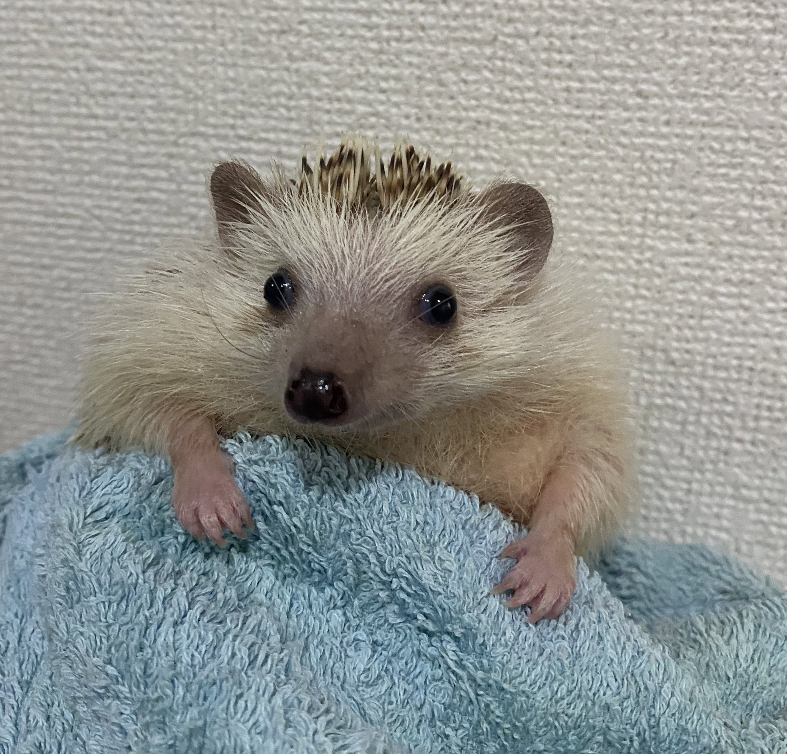

07/09/2025 - Getting Better
For all my life, I've endured severe allergies. The air quality would be just bad enough, I'd have just the right amount of dust in the room or touch something I wasn't meant to and that'd leave me sneezing for 12hrs straight. Often times I'll have no idea what triggered my allergies, leaving me suffering with no idea for how to improve my situation. Just this last week, something triggered my allergies and it left me completely floored. I tried to sleep it off, but I only woke up to the sneezing being worse and completely drained of energy. It feels completely awful, and I wish I had some way to tell what exactly my problem is, why this is such a reoccuring thing in my life. I'm doing better now, but my nose is still stark red with exhaustion and crusty as can be.
Speaking of things in my life getting better, this past month I've picked vocal training back up. Previously when I first came out I tried voice feminization for a few months and just sort of lost the will to continue around the same time my HRT refill was denied. In spite of that, I'm finally back at it even though it's been years. I'm surprised that I've retained some of the pitch control I had from my past vocal training. It's not much, but in training my larynx again I've found myself able to hit higher pitches that I've since lost in my time since I last trained it. More than that, I've gotten some amount of resonance control and I'm quite happy with my results so far. I simply need to apply my fem voice anywhere I can in every day life, and I'll eventually have a voice I can be fully proud of. Might be silly to admit, but I'm looking to Bridget's dub voice from Guilty Gear Strive and Amy Rose from the early 2000s Sonic games as a sort of vocal inspiration. I want that sort of peppy yet not too too high pitched voice as my own. Some circumstance in my life relating to privacy has kept me from actively training much this week (in addition to being as sick as I was the past few days) but I really just need to make myself do it, even if I'm timid about being heard.
Things are going well for me. There's some turbulance like there always is in life, but I'm certain that things will only be better going forwards. I just need to keep doing things to benefit myself (like voice training or even working on this website) and everything will be just fine.
06/16/2025 - A Warm Welcome
Welcome to my website. Though it's incomplete at the moment, I'm hoping to work to make this a nice little space. This is my diary where I'll write about all sorts of things that come to mind, however since this is the first entry here I'll start by sharing a little bit about myself. My name is Emily, I'm a 26 year old trans woman living in France, I like hedgehogs and gaming and I'm a bit of an aspiring creative. I'm looking to eventually make video essays in order to express my creativity, but this website and my Backloggd are two other outlets for me to express myself. I like to write, though I don't think I'm very good at it. Noticing flaws in what I work on is just an excuse to improve, even if I do have a habit of beating myself up over small mistakes.
If you're still here, I'd like to thank you for taking the time to read all of this. It means a lot to me that people would care about what I have to say, even if I don't have too much *to* say. Regardless, thank you for your time.
